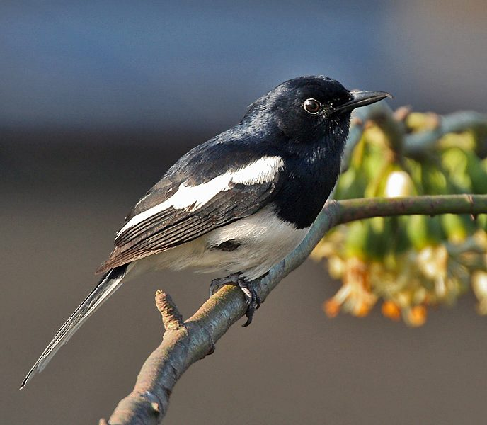

दहियरOriental Magpie-Robin
Copsychus saularis · Muscicapidae · BRD-0036

- Scientific name
- Copsychus saularis (Linnaeus, 1758)
- Family
- Muscicapidae
- Hindi
- दहियर
- Status here
- native
- IUCN
- LC
When to look कब देखें
Present all year.
दहियर / Oriental Magpie-Robin
Copsychus saularis (Linnaeus, 1758) — Muscicapidae
दहियर (ओरिएंटल मैगपाई-रॉबिन) — पूर्वी उत्तर प्रदेश के घरों के बगीचों, आम के बगीचों, खेतों की मेड़ों और इंसानी बस्तियों के पास पाया जाने वाला एक अत्यंत लोकप्रिय, सुंदर और सुरीला निवासी पक्षी है। नर दहियर की पीठ, सिर और छाती चमकीले नीले-काले (glossy blue-black) रंग की होती है, जबकि उसका पेट और पूँछ के किनारे के पंख साफ सफ़ेद होते हैं। मादा दहियर में काले रंग की जगह स्लेटी-धूसर (grey-brown) रंग होता है। यह पक्षी अपनी पूँछ को अक्सर ऊपर की ओर उठाकर खड़ा रहता है (cocked tail)। यह भारत के सबसे बेहतरीन गायक पक्षियों में से एक है, जिसकी सुरीली सीटी जैसी आवाज़ विशेष रूप से वसंत और मानसून की सुबह गूंजती है। यह बांग्लादेश का राष्ट्रीय पक्षी है, हालांकि उत्तर प्रदेश का राज्य पक्षी सारस क्रेन है।
Quick Identification त्वरित पहचान
| Feature | Description |
|---|---|
| Size | Small, slender bird (19–21 cm total length); slightly larger than a Sparrow |
| Male colouration | Glossy blue-black head, neck, mantle, and breast; pure white belly and flanks |
| Female colouration | Similar pattern but charcoal-grey or brownish-grey replacing the blue-black |
| Wings & Tail | Black wings with a bold, long white wing bar; tail black with white outer feathers |
| Post-breeding | Tail is frequently cocked at a 45 to 90-degree angle, especially when foraging |
| Song | Clear, varied, and melodious whistling song sung from high tree branches |
Field tip: Look on garden fences or rooftops at dawn. Watch for a neat black-and-white bird cocking its tail vertically and singing a loud, beautiful, whistling song.
Morphology आकारिकी
Biometrics (typical measurements in the northern Indian plains):
| Measurement | Range |
|---|---|
| Total length | 190–210 mm |
| Wing (flattened chord) | 90–105 mm |
| Tail | 80–95 mm |
| Tarsus | 26–30 mm |
| Bill (culmen from base) | 18–22 mm |
| Weight | 28–40 g |
Plumage: The male nominate subspecies has a glossy blue-black head, neck, breast, and upper mantle. The lower breast, belly, and undertail coverts are clean white. The wings are black, with a broad, prominent white bar formed by the median and greater coverts. The tail is black, but the two outer pairs of feathers are entirely white, and the third pair is partly white, flashing brightly when the tail is spread.
Bare parts: The straight, sharp-pointed bill is black. The irises are dark brown. The long, slender legs and feet are blackish-grey.
Vocalisations
Oriental Magpie-Robins are among the finest singers in the region.
- Breeding Song: A loud, rich, highly varied series of whistles, trills, and mimicry, sung by males from exposed perches (like TV antennas or high branches) to defend territory.
- Alarm / Contact Call: A harsh, rasping, upward-slurred scold: shreer or churr, and a sharp whistle: tsip-tsip, uttered when cats or humans approach.
Ecological Role पारिस्थितिक भूमिका
Insectivore and songbird.
- Ground insect feeder: They forage primarily on the ground under bushes, consuming destructive beetles, caterpillars, and ants.
- Territorial regulator: Males aggressively defend their feeding and nesting territories, keeping other insect-eating rivals in check.
- Cavity occupant: They nest in tree hollows or crevices in human walls, depending on secondary cavities and representing a key link between urban architecture and forest biodiversity.
Life Cycle / Phenology जीवन चक्र
- Breeding season: March to July, starting with the warm spring and ending before peak monsoon.
- Nesting: They nest in hollow tree trunks (mango, banyan, peepal), holes in old village walls, or even inside electrical junction boxes.
- Nest lining: A neat cup of fine grass roots, hair, and fibers built by the female.
- Clutch size: 4 to 5 pale green eggs blotched with reddish-brown.
- Incubation: 12–14 days, done mainly by the female.
- Fledging: Both parents feed the nestlings with caterpillars. Chicks fledge and leave the nest in 14–16 days.
Host Plants or Prey आहार
Primary food items:
- Insects: Ants, caterpillars, grasshoppers, crickets, flies, and woodlice (Burmoniscus javanensis).
- Other invertebrates: Small spiders and earthworms.
- Small vertebrates: Occasional geckos and small frogs.
- Nectar: Regularly visits the flowers of Palash (Butea monosperma) and Silk Cotton (Bombax ceiba) trees in spring.
Predators / Natural Enemies शत्रु
- Corvids: House Crows (Corvus splendens) are major predators, robbing eggs and nestlings from wall holes.
- Carnivores: Domestic cats and Small Indian Mongooses (Herpestes edwardsii) prey on adults foraging on lawns.
- Reptiles: Common Wolf Snakes (Lycodon aulicus) and garden lizards enter nest crevices to consume eggs.
Agricultural / Human Relevance कृषि प्रासंगिकता
Excellent garden ally. They are highly beneficial in domestic orchards and kitchen gardens as they eat leaf-destroying insect pests and lawn grubs.
In Basti, the dahiyar is loved for its song, and its presence near houses is considered a sign of peace and a healthy garden. Its song is a traditional marker of the morning hour in village routines.
Expected Locally स्थानीय रूप से अपेक्षित
Not a field record. Written from published accounts for eastern Uttar Pradesh. No confirmed local sighting yet — if you have seen it, that is what the atlas needs.
अभी तक स्थानीय पुष्टि नहीं। यह विवरण प्रकाशित स्रोतों से है, किसी अवलोकन से नहीं।
A common resident in the old orchards and houses of Basti and Ayodhya. They are frequently seen hopping on wet lawns after summer irrigation, tossing dry leaves aside to catch insects. They are very territorial; a resident male will actively chase away any intruding male from its garden area. They frequently nest in the ventilation holes (roshandaan) of old brick houses in rural Basti.
Distribution वितरण
Global range: Widespread across the Indian Subcontinent and Southeast Asia.
In India: Found throughout the plains and hills up to 2,000 meters.
In Uttar Pradesh: A common resident in all domestic gardens, village orchards, and urban parks.
In Basti district / eastern UP: Abundant year-round in both urban areas (Basti town) and outlying villages.
Research Questions शोध प्रश्न
Anyone can investigate these | कोई भी इन प्रश्नों की जाँच कर सकता है
- How many song variations does a single male Magpie-Robin sing during a morning session? — Record and compare song structures of a resident male.
- Do Magpie-Robins nesting in human walls have higher fledgling success than those in natural tree cavities? — Monitor nest sites in village houses vs. mango groves.
- What is the foraging success rate of Magpie-Robins on concrete lawns vs. natural soil surfaces? — Compare search-to-capture times.
- How does song duration change in males when a rival male is detected? / जब किसी प्रतिद्वंद्वी नर का पता चलता है तो दहियर के गाने की अवधि में क्या बदलाव आता है? — Observe territorial song contests.
- Does the use of chemical pesticides in domestic gardens affect the breeding success of Magpie-Robins? / क्या घरेलू बगीचों में रासायनिक कीटनाशकों का उपयोग दहियर की प्रजनन सफलता को प्रभावित करता है? — Survey nest densities in organic vs. sprayed gardens.
Similar Species मिलती-जुलती प्रजातियाँ
| Species | Key Difference | हिंदी |
|---|---|---|
| White-browed Fantail (Rhipidura aureola) | Similar size and black-white pattern; has a broad white eyebrow; constantly fans tail horizontally; insectivore | सफेद-भौंह फेंटेल — पूंछ को पंखे की तरह फैलाना |
| Pied Bushchat (Saxicola caprata) | Smaller (13 cm); male is jet-black with white wing patch and rump (lacks white belly and breast); female is brown | काला झाड़ी-पिड्डा — छोटा आकार, काली छाती और पेट |
| Black Drongo (Dicrurus macrocercus) | Larger (28 cm); entirely glossy black (no white); deeply forked tail; perches on wires | भुजंगा — पूरी तरह काला शरीर, दो-शाखी पूँछ |
Field rule: Neat black-and-white pattern (grey-and-white in females), long white wing bar, white outer tail feathers, and a tail that is frequently cocked upward identify the Oriental Magpie-Robin.
Taxonomy & Classification वर्गीकरण
Original description. Carl Linnaeus described the Oriental Magpie-Robin as Gracula saularis in 1758 in his work Systema Naturae, 10th edition (Vol. 1, p. 109). The type locality was Asia (restricted to Bengal). The genus name Copsychus was introduced by Wagler in 1827, derived from the Greek kopsikhos for thrush or blackbird. The specific name saularis is derived from the Hindi saulary, the local name for this bird in Bengal.
Subspecies. Multiple subspecies are recognized. The subspecies found in northern India is:
| Subspecies | Authority | Range | Notes |
|---|---|---|---|
| C. s. saularis | (Linnaeus, 1758) | Pakistan, India, Nepal, Bangladesh | UP subspecies; nominate form; glossy blue-black breast in males |
Family and order placement. Placed in the order Passeriformes, family Muscicapidae (Old World flycatchers and chats).
Phylogenetic notes. Copsychus saularis is closely related to the white-rumped shama (Copsychus malabaricus), sharing similar complex song characteristics.
IUCN status rationale. Listed as Least Concern (LC) due to its extremely large range, stable population, and success in adapting to human gardens.
Photo Gallery फोटो गैलरी
References संदर्भ
- Linnaeus, C. (1758). Systema Naturae per regna tria naturae. Editio Decima. Laurentii Salvii, Holmiae, p. 109. [original description]
- Ali, S. & Ripley, S. D. (1999). Handbook of the Birds of India and Pakistan. Vol. 8. Oxford University Press, New Delhi.
- Grimmett, R., Inskipp, C. & Inskipp, T. (2011). Birds of the Indian Subcontinent. 2nd ed. Christopher Helm, London.
- Sethi, S. & Bhatt, D. (2008). Call repertoire of the Oriental Magpie-robin, Copsychus saularis. Journal of Ornithology, 149(3), 261-267.
- BirdLife International (2024). Copsychus saularis. IUCN Red List of Threatened Species. Ver. 2024.
- GBIF Occurrence Data — Copsychus saularis, Uttar Pradesh (2010–2025).
Source file: species/fauna/birds/oriental_magpie_robin.md